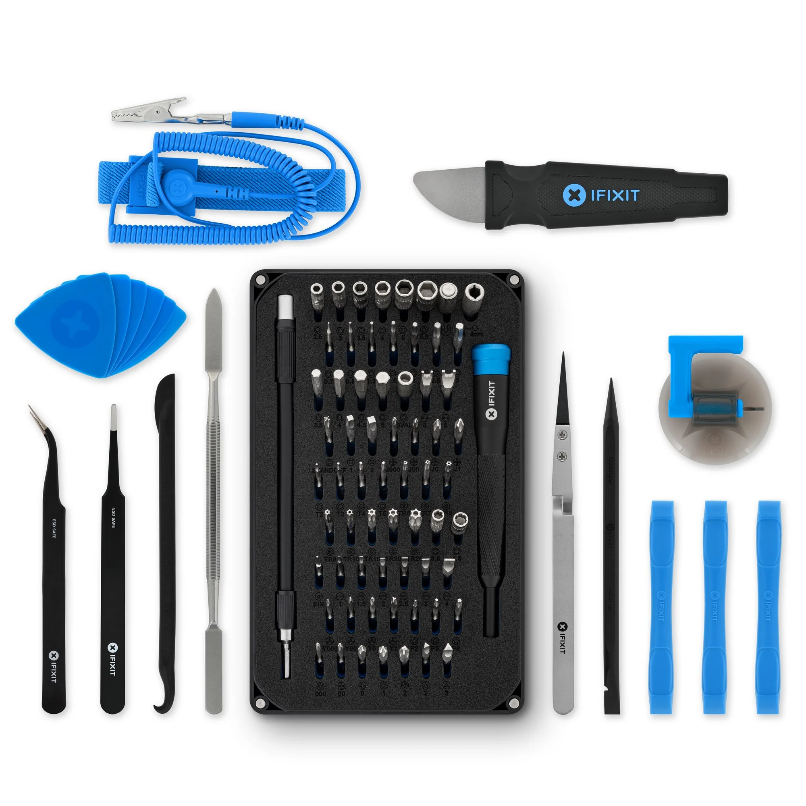
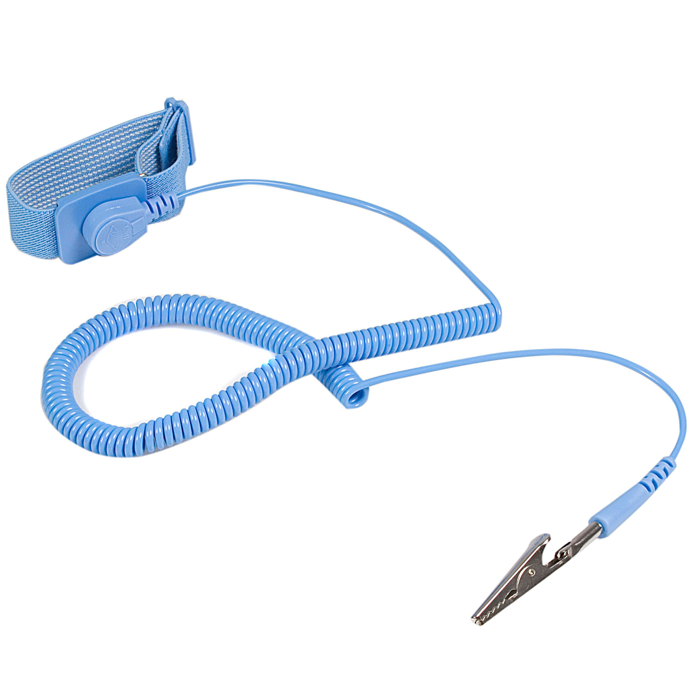
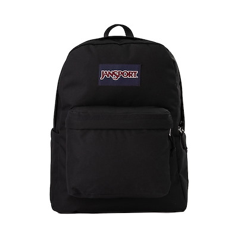

My primary precision repair toolkit. It includes specialty screwdrivers, pry tools, and spudgers that allow me to safely open and repair computers, laptops, and other electronics without causing damage.

Used to prevent electrostatic discharge (ESD) while working on sensitive computer components. This protects CPUs, motherboards, and RAM from static damage during repairs or builds.

My transport solution for tools and hardware. It keeps my repair equipment organized and allows me to bring everything needed for on-site service or maintenance work.